Chapter 5 Plotting
Data visualization is one of the most useful tools and gives you the most “bang for your buck.” Base R is very powerful and intuitive to plot, but is not very aesthetically pleasing or advanced. We also use the ggplot2 package, part of the tidyverse to suit our advanced plotting needs.
5.1 Plotting in Base R
The basic syntax is quite simple, put the variable(s) you wish to plot (which come from a dataframe) inside the argument of a plot function:
plottype(my_df$my_variable1, my_df$my_variable2)If you are using multiple variables, you can avoid having to invoke the same dataframe and $ multiple times by just including the names of the variables in the dataframe, and then add , data=my_df as the final argument of the function, e.g.
plottype(my_variable1, my_variable_2, data=my_df)The three simple plots that we can look at are
| Function | Plot Type | When Used |
|---|---|---|
hist() |
Histogram | Exploring the distribution of a single variable |
barplot() |
Bar Graph | Exploring the counts of different categories of a variable |
boxplot() |
Boxplot | Exploring the distribution of a single variable |
plot() |
Scatterplot | Exploring the relationship between two variables |
5.1.1 Histogram
library("gapminder")
hist(gapminder$gdpPercap)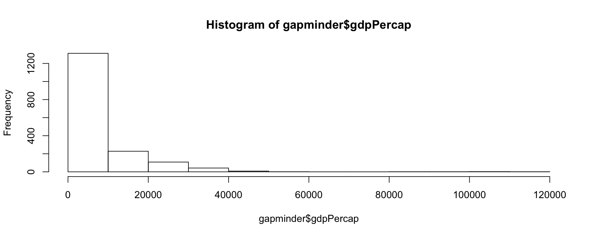
5.1.2 Boxplot
- Boxplots are similar syntax
boxplot(gapminder$gdpPercap)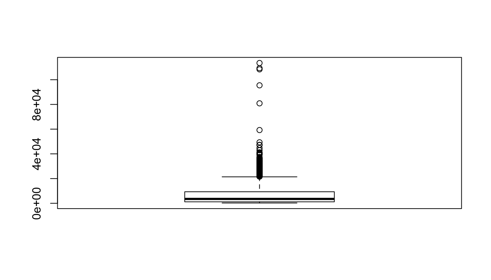
- If we want a boxplot for each category, use
variable.name~category.variable.nameto tellRto plot a boxplot by category
boxplot(gdpPercap~continent,data=gapminder)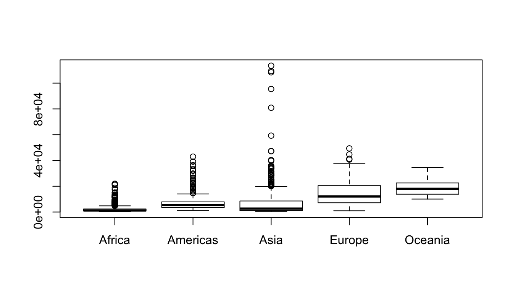
5.1.3 Scatterplot
- Scatterplot syntax for plotting is similar to
hist()andboxplot():plot(df$x,df$y)
plot(gapminder$gdpPercap, gapminder$lifeExp)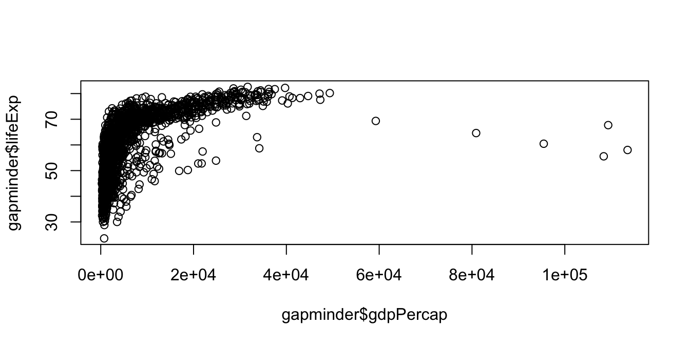
5.2 With ggplot2
`ggplot2 is one of the premier packages at the center of the tidyverse. It is very powerful and creates beautiful data visualizations, but has a steeper learning curve at first. All of those “cool graphics” you see in media outlets such as the New York Times, fivethirtyeight, Vox, the Economist, etc use something are based off of ggplot2. The gg stands for a “grammar of graphics”
5.2.1 Two Ways to Plot
- Just the single
ggplotcommand- Will view plot right after producing it
- Does not save as an object
- Need to rerun or copy/paste full command producing plot in order to modify or view it again
- Can still put it in a document
ggplot(...) # make and view plot
ggplot(some.options) # remake plot with new options and view plot5.2.2 Two Ways to Plot II
- Create an object (as usual in
R)- This allows you to save the plot for later (re)use
- Also allows you to modify it
- Any time you want to view display it (i.e. for putting it in a document), just call up the plot by name
plot.name<-ggplot(...) # make plot
plot.name<-plot.name+some.options # add new options to existing plot
plot.name # view plot plot.name<-ggplot(data=mydf, mapping=aes(x=xvar,y=yvar))+
geom_something(options)+
moreoptions...gg“grammar of graphics” implies any graphic can be built from the same components/layers:- Data: base-layer describes the data used
mydfis the dataframe containingxvarandyvaraes()“aesthetics” identifiesxvar(and if applicableyvar) from data to be “mapped” to a visual mark
- Geoms: visual marks that represent data observations or models, common examples:
- e.g.
geom_point,geom_line,geom_bar,geom_histogram,geom_density,geom_boxplot
- e.g.
- Coordinates: Cartesian coordinates are default
- change scales, axes, labels, etc; advanced options like maps
- Data: base-layer describes the data used
- Most important idea to master is
aes()aesthetics that map data to visual markings - Aesthetics come in many forms and many options, depending on the context of the data
- Must identify position (e.g. what is
xandy) - Determine the marking with various
geoms(points, bars, lines, boxes, etc) - Can pass additional options into
geom(color, size, shape, etc)- Particularly important if we want color, size, or shape to depend on a particular variable in dataset
- Must identify position (e.g. what is
For our example, we’ll use the mpg dataset loaded with the ggplot2 package
library("ggplot2") #load ggplot2
mpg #look at dataset## # A tibble: 234 x 11
## manufacturer model displ year cyl trans drv cty hwy fl
## <chr> <chr> <dbl> <int> <int> <chr> <chr> <int> <int> <chr>
## 1 audi a4 1.8 1999 4 auto(l… f 18 29 p
## 2 audi a4 1.8 1999 4 manual… f 21 29 p
## 3 audi a4 2 2008 4 manual… f 20 31 p
## 4 audi a4 2 2008 4 auto(a… f 21 30 p
## 5 audi a4 2.8 1999 6 auto(l… f 16 26 p
## 6 audi a4 2.8 1999 6 manual… f 18 26 p
## 7 audi a4 3.1 2008 6 auto(a… f 18 27 p
## 8 audi a4 quat… 1.8 1999 4 manual… 4 18 26 p
## 9 audi a4 quat… 1.8 1999 4 auto(l… 4 16 25 p
## 10 audi a4 quat… 2 2008 4 manual… 4 20 28 p
## # ... with 224 more rows, and 1 more variable: class <chr>5.2.3 gg Histogram: Base Layer
- Start with the base layer: establish the data source, define \(x\) variable
mpg.h<-ggplot(data=mpg,mapping=aes(x=hwy))
mpg.h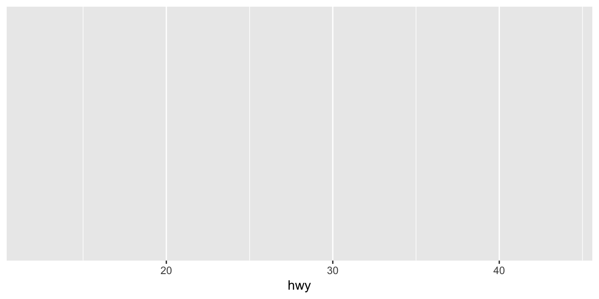
5.2.4 gg Histogram: Adding Geoms
- Add a histogram layer of
hwy
mpg.h1<-mpg.h+geom_histogram()
mpg.h1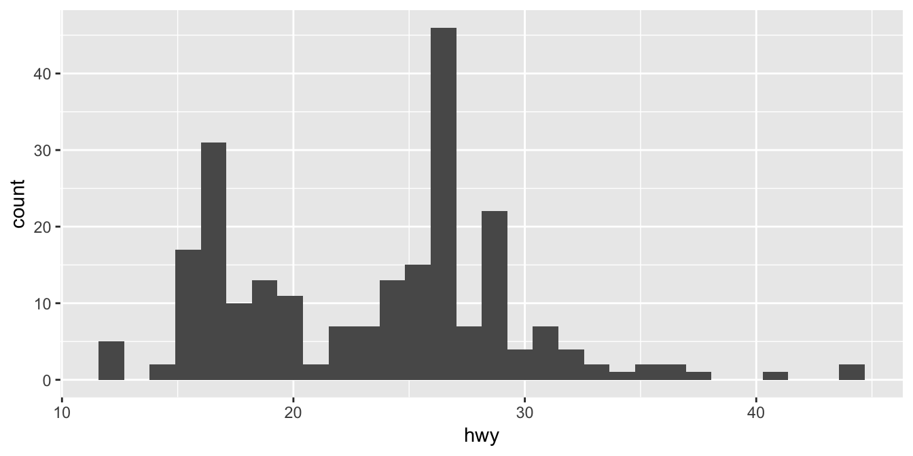
5.2.5 gg Histogram: Customizing Geoms
- Edit the histogram (# of bins, color, etc)
mpg.h2<-mpg.h+geom_histogram(bins=20, color="black",fill="indianred")
mpg.h2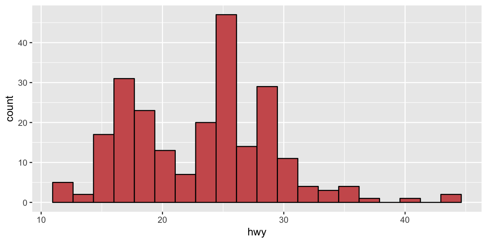
5.2.6 gg Histogram: Adding Other Layers
- Add a vertical line for the mean with another
geomcalledvline
mpg.h2<-mpg.h2+
geom_vline(xintercept=mean(mpg$hwy),linetype="dotted",color="blue",size=1)
mpg.h25.2.7 gg Histogram: Editing Coordinates (Axes)
- Change the labels on the axes with
xlab()andylab()
mpg.h2<-mpg.h2+xlab("Miles Per Gallon (on Highway)")+ylab("Number of Cars")
mpg.h2
5.2.8 gg Other Geoms
- How about a density plot: use
geom_density()instead ofgeom_histogram()
mpg.d<-ggplot(data=mpg,aes(x=hwy))+
geom_density(fill="indianred")
mpg.d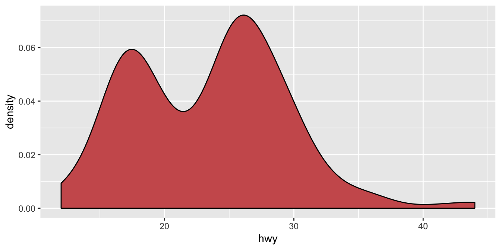
5.2.9 gg Other Geoms
- Let’s make a separate density plot for each
class, setaestofillbyclass
mpg.d<-ggplot(data=mpg,aes(x=hwy,fill=class))+
geom_density(alpha=0.5) # alpha adds transparency
mpg.d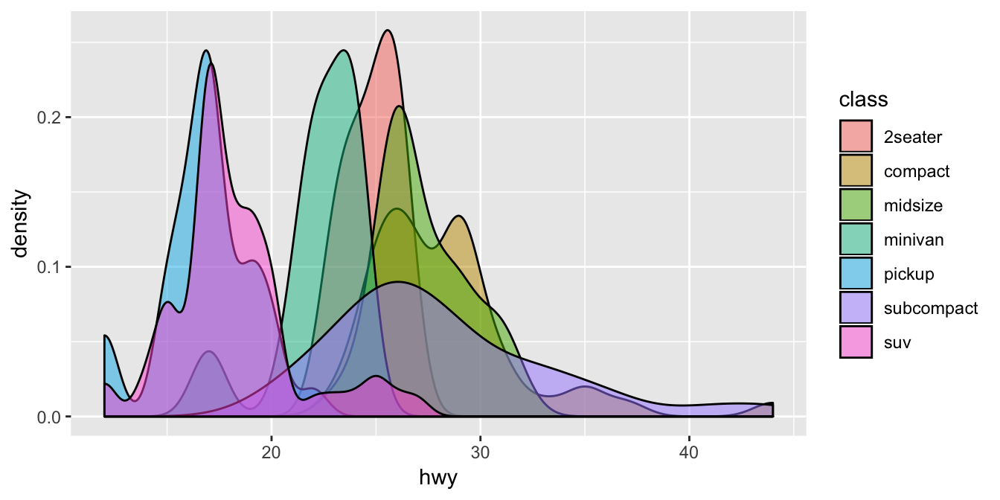
5.2.10 gg Boxplot
- Instead of a density plot, a
boxplotbyclass(note nowxisclassandyishwy):
mpg.b<-ggplot(data=mpg,aes(x=class,y=hwy,fill=class))+
geom_boxplot()
mpg.b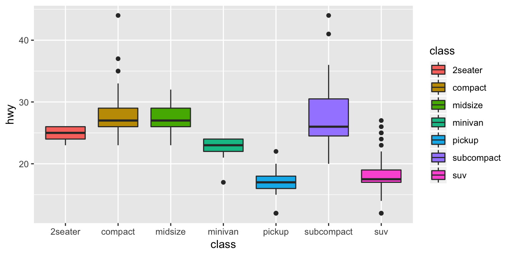
5.2.11 Scatterplot
- Start with the base layer: establish data source, define \(x\) and \(y\) variables
mpg.p<-ggplot(data=mpg,aes(x=displ, y=hwy)) #use mtcars df, let x=displ, y=hwy
mpg.p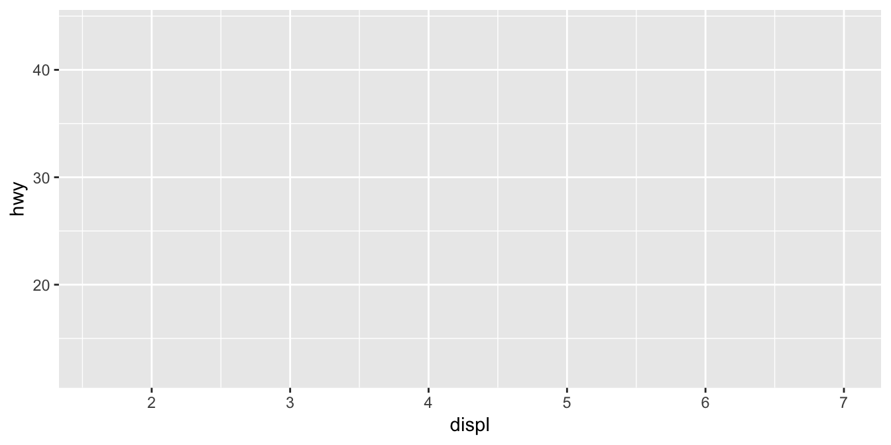
5.2.12 Scatterplot: Geom Layer
mpg.p<-mpg.p+geom_point() # specify observations as points on graph
mpg.p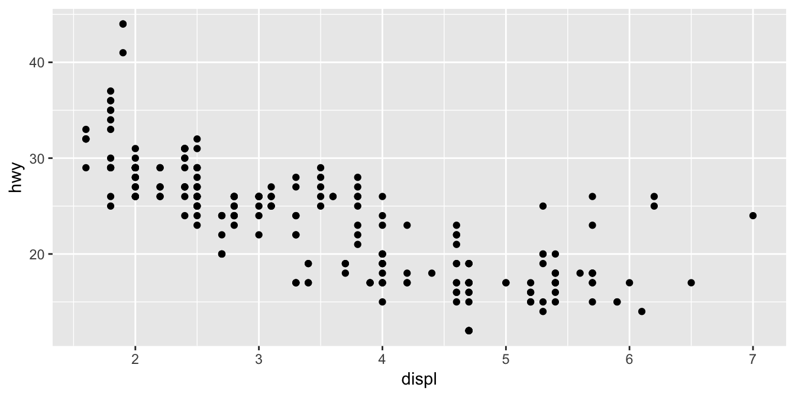
5.2.13 Scatterplot: Geom Layer Options
mpg.p<-mpg.p+geom_point(aes(color=manufacturer)) # color data points by manuf.
mpg.p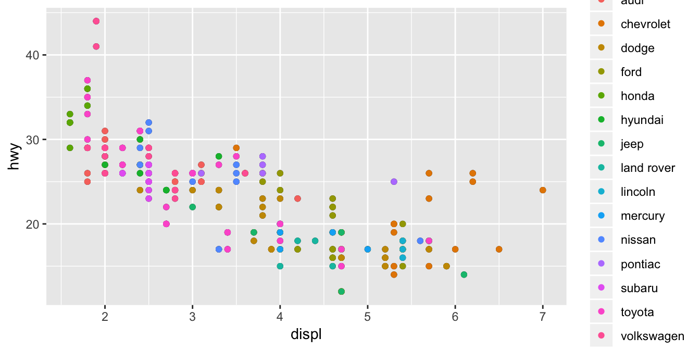
5.2.14 Scatterplot: Geom Layer II
mpg.p<-mpg.p+geom_smooth(method="lm", color="black") # add a black OLS line
mpg.p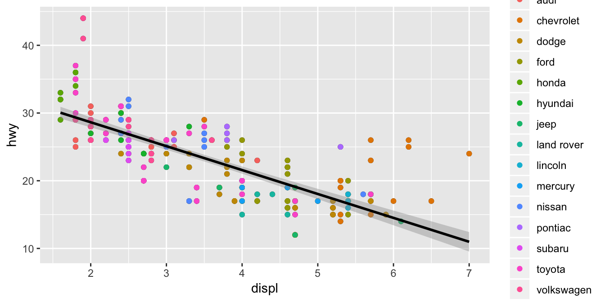
5.2.15 Scatterplot: Coordinate Layer
mpg.p<-mpg.p+xlab("Engine Displacement (Liters)")+
ylab("Miles Per Gallon on Highway")
mpg.p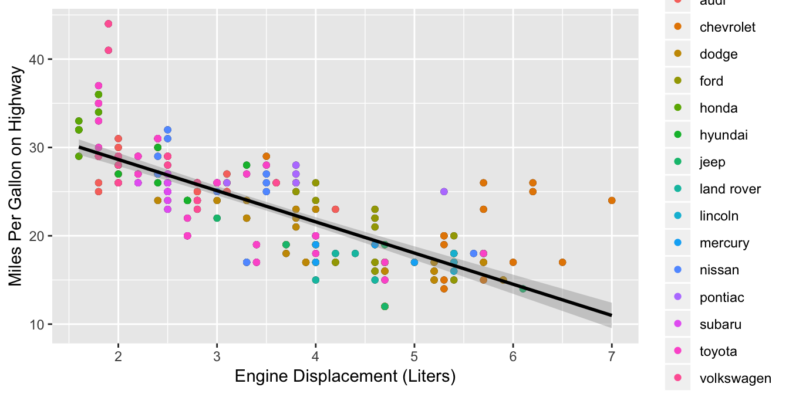
5.2.16 Scatterplot: Coordinate Options
- Let’s have some fun changing the theme
library("ggthemes") # need ggthemes package (install if first use)
mpg.p<-mpg.p+theme_economist_white() #make it look like The Economist magazine
mpg.p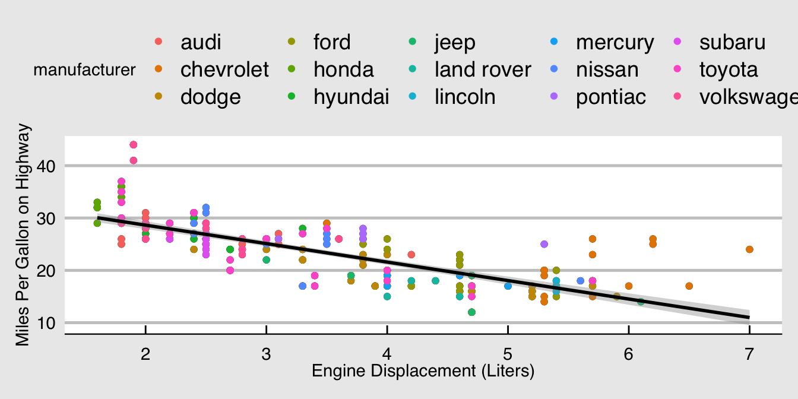
5.2.17 Scatterplot: Coordinate Options II
mpg.p<-mpg.p+theme_fivethirtyeight() #make it look like fivethirtyeight
mpg.p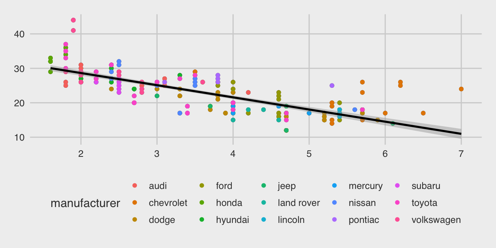
5.2.18 Scatterplot: Coordinate Options: Facetting
# make columns of separate 'facet' figures for each class of car
mpg.p<-mpg.p+facet_grid(cols = vars(class)) # make 'columns' by variable 'class'
mpg.p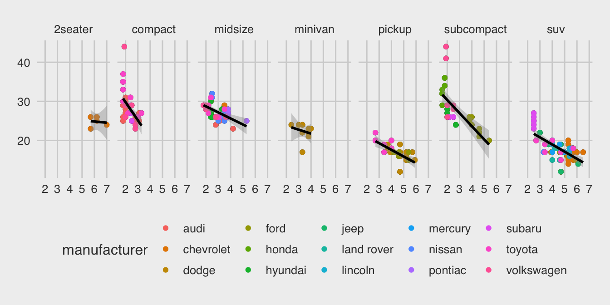
5.2.19 All Together Now
ggplot(data=mpg,aes(x=displ, y=hwy))+geom_point(aes(color=manufacturer))+
geom_smooth(color="black",method="lm")+
xlab("Engine Displacement (Liters)")+ylab("Miles Per Gallon on Highway")+
theme_fivethirtyeight()+facet_grid(cols = vars(class)) 5.2.20 Advanced Uses of ggplot2: Maps (See Rmd for Code)
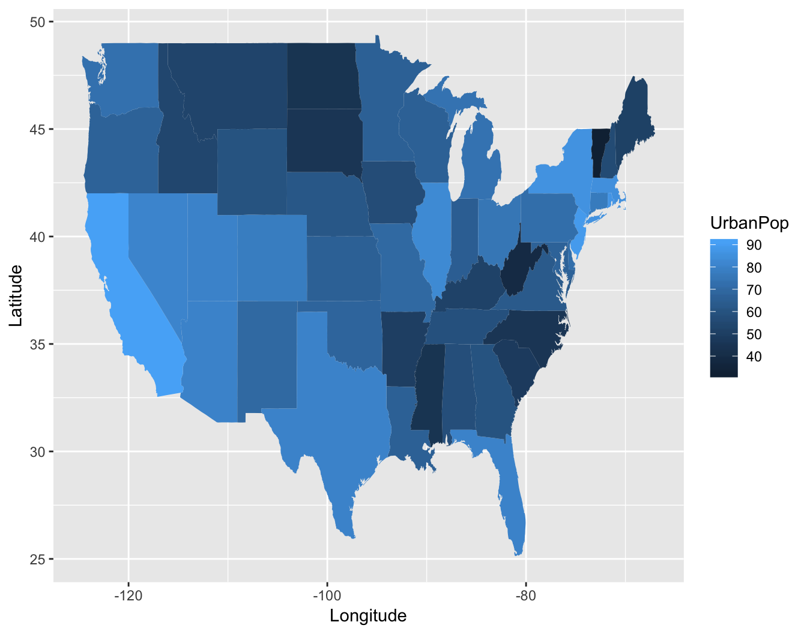